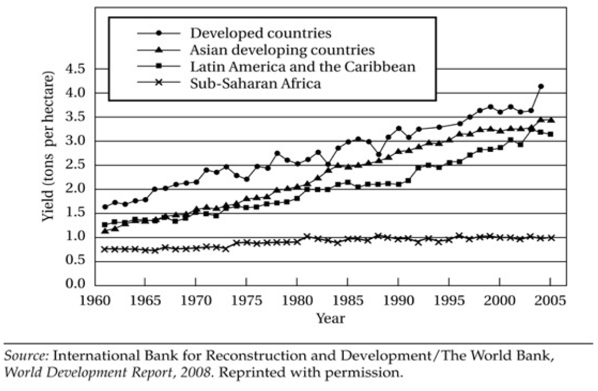
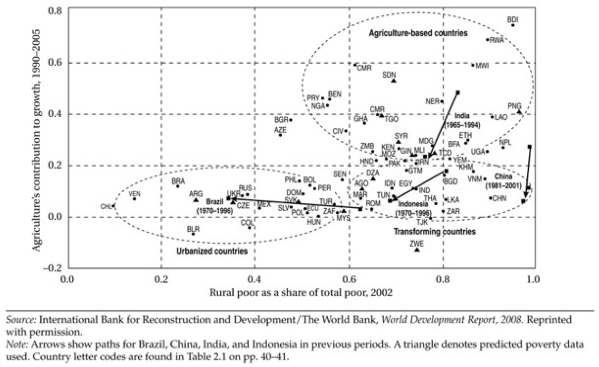
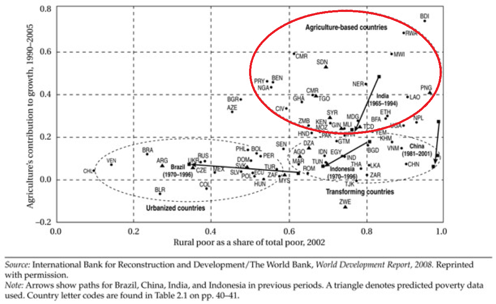
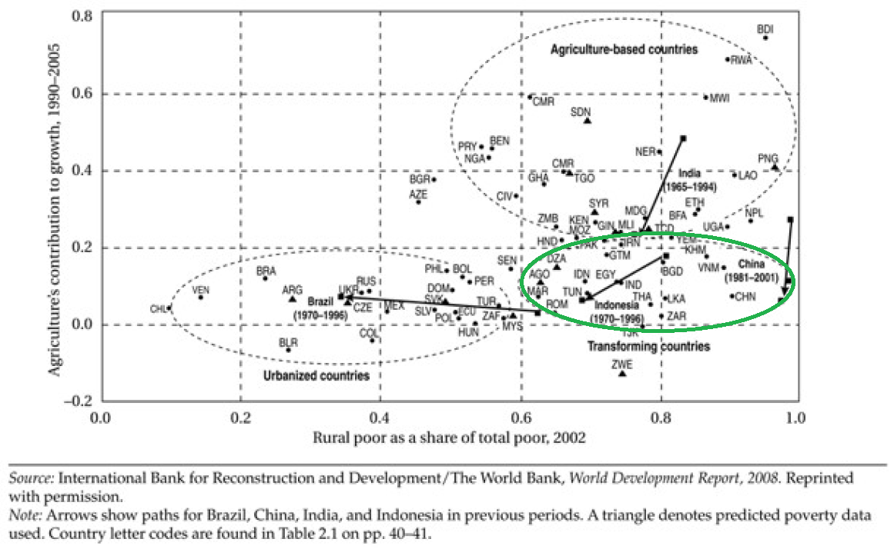
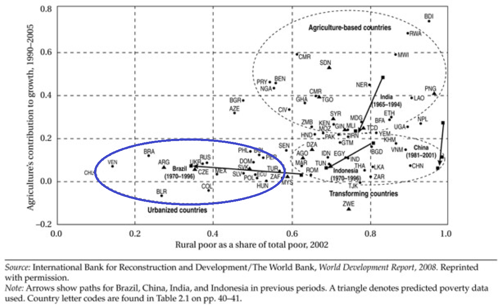
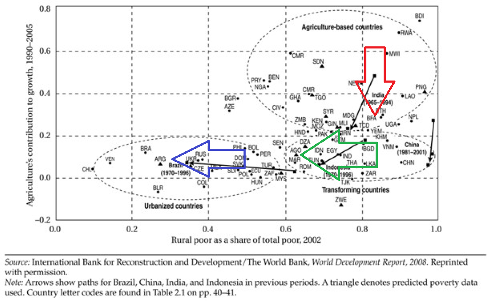
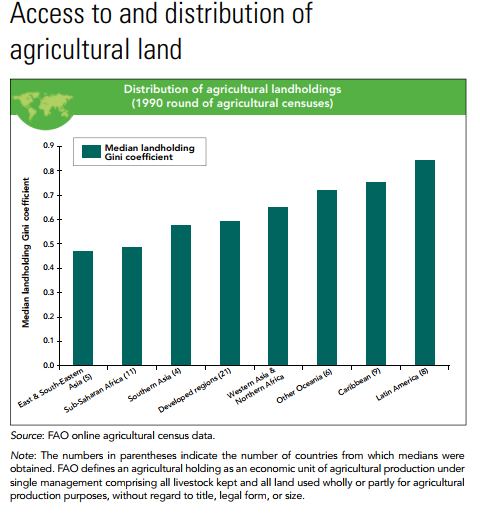

Green Revolution \(\leftarrow\) I made it green
Boost in grain production associated with the scientific discovery of new hybrid-seed varieties of wheat, rice, and corn that resulted in high yields in many developing countries
Key Elements
- High-yield crop varieties
- Chemical fertilizers and pesticides
- Irrigation expansion
- Modern farming techniques
New Seeds
- Resistance to drought and pests
- Give higher yields



Agrarian Systems in Developing Countries
There are different agricultural practices in developing economies
We can think of three separate stages
1. Agriculture-based countries
2. Transforming countries
3. Urbanized countries
1. Agriculture-Based Countries
- About 417 Million people live here
- More than 66% of the poor in these countries live in rural areas
- Agriculture accounts for 32% of GDP growth (on average)
- Rely heavily on traditional agricultural practices
- “Slash-and-Burn” No Bueno
Slash-and-Burn
Rotating plots of land
Here is the process:
- Remove trees and vegetation
- Burn the area (increases nutrients in the soil)
- Plant crops directly into nutrient-rich ash
- Cultivate until plot becomes infertile
- Abandoment and fallow
Very old agricultural process and it is not very efficient if you are not moving around the world
- Also leads to deforestation and erosion
Infertility happens after maybe 2-3 years, depending on land use
Plot is left alone and let to grown on its own (fallow period)
2. Transforming Countries
- Largest concentration of people living in a rural setting (2.2 Billion)
As the name implies, its a transition toward urbanization
- Rural poverty is high, but agriculture contributes about 7% to GDP growth
- Labor begins to move out of agriculture and into other sectors (manufacturing, services, and construction)
- Urbanization accelerates as people migrate to cities for jobs
- Potential for income growth
- Increased probability of income inequality
3. Urbanized Countries
- Half or more than the country’s poor live in cities
- Very few working people are in the agricultural sector
- Agriculture contributes even less to GDP growth
- Typically will find an industrial agricultural sector (US)
- Typically countries with large urban centers
- Technological innovation and human capital drive growth
Three Systems of Agriculture

Three Systems of Agriculture

Three Systems of Agriculture

Three Systems of Agriculture

Three Systems of Agriculture

Problems in Agricultural Development
As with everything, there are issues of inequality
- Here we are talking about inequality in land holdings (specially in LATAM)
- Huge farms employ many people
- However, land owners care more about maintaining market power than increasing output
- Medium sized farmers are rare
- Farms these size potentially have a better mix of capital and labor, are more productive, have lower transaction costs than larger farms
- Some very small farms
- These are household farms
- Because they are small, there are no economies of scale
Land GINI

Problems in Agricultural Development
Subdivision of land in Asia
- Pre-colonial Asian cultures prefer cooperation, sharing resources within villages
- Colonial institutions assigned property rights to land
- Most landlords live elsewhere, and rely on sharecroppers to produce agricultural goods
- Sharecroppers: Renter farmers, which kickback a percentage of the crops in exchange for lease of the land
- Land is scarce, so rents are high
- At the same time, labor is abundance, so wages are low
Problems in Agricultural Development
Subsistence farming in Africa
- Most farming takes place on small plots to produce for one family
- Three main reasons for this persistence:
- Most farming is done by individuals using traditional tools
- Farming usually involves shifting cultivation once land nutrients have been used
- Leads to inefficencies since individuals must wait for nutrients to replenish
- This causes large swings in employment
- During farming times, labor is scarce
- During non-farming times, labor is in excess
- It is hard to sustain populations with the amount of food grown in these economies